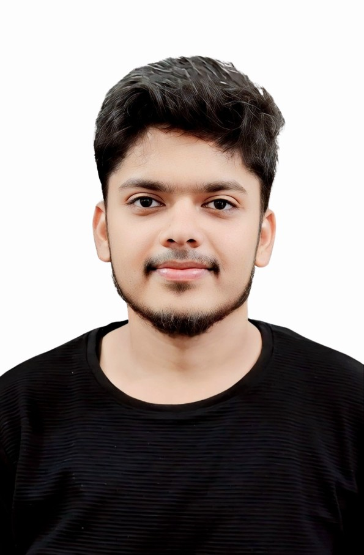

Personal Portfolio
A responsive portfolio website to introduce myself, share selected projects and make my contact details easy to find.
BCA Student · Aspiring Web Developer
I work with HTML, CSS, JavaScript and keep learning by building projects.
I'm Yuvraj, a BCA student from Agra. I enjoy turning ideas into clean, practical web pages and learning how the pieces work behind the screen.

A little about what I'm building.
About
Curious about the web, interested in solving practical problems, and learning one project at a time.
I'm currently pursuing a Bachelor of Computer Applications. My main interest is frontend web development, especially building pages that are clear, responsive and easy to use.
Alongside HTML, CSS and JavaScript, I've worked with PHP, MySQL, Python and Flask in academic and personal projects. I'm still developing my skills and prefer learning by making things that work.
Selected work
A few learning projects where I've put my web development and programming skills into practice.
A responsive portfolio website to introduce myself, share selected projects and make my contact details easy to find.
A Flask-based web application focused on uploading health reports and presenting report information, guidance and monitoring history.
A multi-page educational website with Home, About, Courses, Blog, Testimonials and Contact sections, built as a college project.
Project repository links can be added here once the individual GitHub repositories are ready.
Skills
These are the technologies and concepts I've studied or used in my projects so far.
Education
Dr. Bhimrao Ambedkar University, Agra
CBSE
University Model School · CBSE
05 / Contact
I'm interested in connecting with people working in web development and learning about suitable internship opportunities.